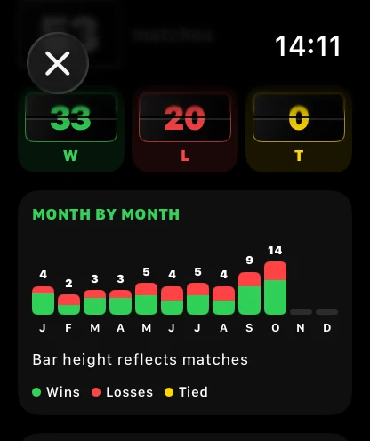

Play
Keep score courtside on Apple Watch.
BUILT FOR TENNIS PLAYERS WITH APPLE WATCH
A classic flip scoreboard on your wrist. The story behind the score on iPhone. Keep each point, relive the turning moments with Time Machine and discover more of your tennis with Pro.
Pro includes both apps. No separate Standalone purchase is needed.
Requires iOS 26.0 or later and Apple Watch


Keep score courtside on Apple Watch.
Your saved match moves privately through iCloud.
Rewind the match and discover the story behind the score.
THE COMPLETE PRO EXPERIENCE
One purchase. Two complementary views. Keep score on Apple Watch, then revisit the points, discover your patterns and share the moments that deserve another look on iPhone.
Tennis Score Wizard (Standalone) is the separate Watch-only option. You do not need to buy it to use Pro.
ON COURT · APPLE WATCH
Tap the player who wins the point. Enjoy bold flip-style digits and satisfying mechanical-style clicks while Pro handles games, sets and tie-breaks. Serving guidance and Undo help you stay with the play.
One Set, Best of 3 or Best of 5. Advantage sets, tie-break sets and official Short Sets. Standard games or No-Ad, plus a deciding Match Tie-Break to 7 or 10.
Custom Set lets you choose the game target, winning margin, tie-break starting score and point target. Keep the full set-by-set result in your history.
Keep every saved result close. Find a match by date or explore Month, Year and All Time in Tennis, with activity and achievements supported by your history.



TIME MACHINE · WATCH + IPHONE
Go back to the first serve, the long deuce or the tie-break that changed everything. Time Machine follows your recorded points, server and score—without changing the match.

Step through points or drag the timeline. Turn iPhone sideways for a wider view of the recorded match.

Game Momentum and Match Flow reveal how the points developed. A recorded point history is required.

Use the arrows or Digital Crown on Watch. During play, revisit earlier points and return straight to the live board.
MATCH HIGHLIGHTS · IPHONE
The comeback you worked for. The tie-break you survived. A new best in your recorded history. Match Highlights finds the moments worth remembering when your saved data supports them.

PLAYED MATCHES · IPHONE
Add a completed or stopped match, including a tied result. Enter set scores and optional tie-break points, then correct the timing, rules or score later without recreating the match.

Use start and end times, including dates across midnight, or an end time and optional duration. Corrections sync to the same match in Watch history.

Add surface, indoor or outdoor conditions, venue, court and a private note. Reuse recent and favourite courts saved on your iPhone.

Manual matches are labelled on iPhone and Watch. Point-by-point and workout statistics appear for recorded matches when available.
Watch-recorded scores are protected from manual editing. Opponent assignment and court context can be updated separately, including for older matches.
RIVALRIES · IPHONE
Create saved player profiles with a full name, short Watch name and private notes. Choose an opponent before a singles match or assign a previous result later.

Keep your singles meetings in a private Head-to-Head record.

Compare recent form, wins, sets, games and tie-break results.

Explore available serve, return, break-point and workout comparisons.
CALENDAR · RECAPS · STATS · TRENDS
One match is a moment. A season is a story. Find your playing days, explore month and year recaps and see your recent form in context with statistics, comparisons and trends.

Find past matches and see when you have been on court.

See weekly activity, compare periods and share a recap card.

Review win rate, streaks, court time and available point, serve and return statistics.

Explore rolling trends and monthly activity, then share a visual summary.
EXPORT · BACKUP · SHARED MATCHES
Your tennis deserves a life beyond the app. Keep a separate copy, explore the numbers or send an opponent their side of the story.

APPLE HEALTH
Optionally record a tennis workout on Apple Watch. With permission, see live heart rate and review duration, average and maximum heart rate, and active energy. Saved workouts also appear in Apple Health and Fitness.

PRIVATE SYNC
Transfer matches between paired Watch and iPhone apps, and sync saved history through private iCloud using the same Apple Account. No Tennis Score Wizard account is required, and match data is not sent to developer-operated servers.

READY ON YOUR WRIST
Add a complication for quick access to the Watch app. Keep scoring, history, available statistics and optional workouts together on Apple Watch.

BEFORE YOU START
No. Pro includes the complete Apple Watch app and iPhone analysis in one purchase. Tennis Score Wizard (Standalone) is a separate option for people who want the Watch-only product.
The iPhone app requires iOS 26 or later; the included Watch app requires watchOS 26 or later. Live scoring and workout recording use Apple Watch. You can add and review manually entered matches on iPhone.
For manually added matches, you can correct the date, timing, rules and score. The updated record syncs to Watch history. Watch-recorded scores cannot be edited manually. Opponent assignment and match context have separate controls.
Match cards can include the full set score, tie-break details, available statistics, up to six qualifying highlights and optional court details. Private match and player notes are excluded. Highlights and records are based on supporting saved data, not on court details.
Time Machine needs recorded point history. A manually entered final score cannot recreate the points, and replay is not a camera recording. Use the arrows or timeline to revisit supported matches without changing their score.
No. Pro is a one-time purchase that includes both apps. Optional tips support development and do not unlock extra features. See the App Store for the current price in your region.
ONE-TIME PURCHASE
Keep the score. Relive the turning points. Discover your tennis. Apple Watch and iPhone apps included in one purchase, with no subscription.